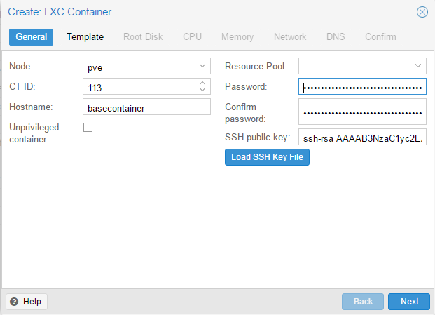
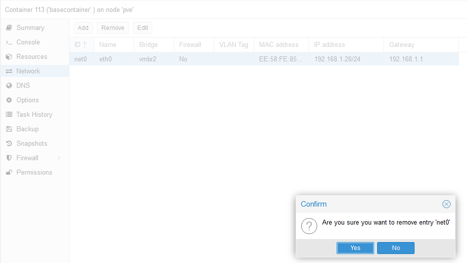
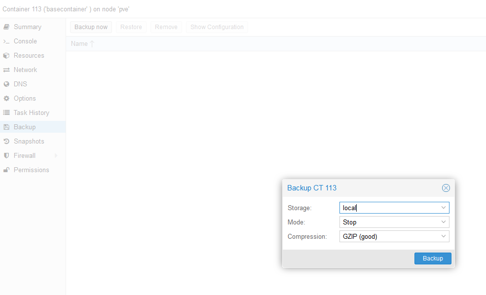
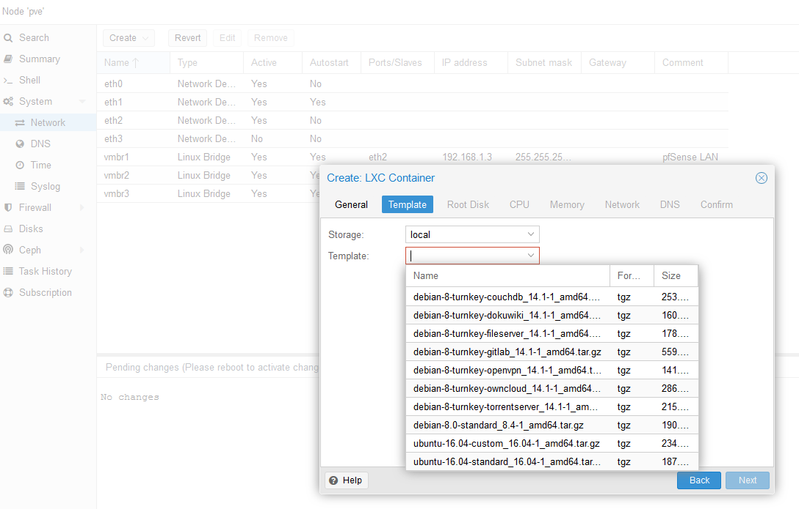

Base Container
The first thing you need to do is create a 'base' container where you choose your settings as you please. Because I am most comfortable with Ubuntu, I will be modifying an ubuntu-16.04-standard_16.04-1_amd64 container.
Whatever choices you make for hardware will not affect the template, so just finish making the container.
Enter the container and customize it to your liking. If you would like some suggestions, my first 5 minutes on a server consist of the following:
sudo pct enter < id >
-
Create a new user account with sudo permissions
-
adduser andrew # Create user -
usermod -aG sudo andrew # Add to sudoers
-
-
Configure SSH keys. Note that I added my SSH public key in the initial template creation and as such the key is present in root's authorized_keys;
if you would rather not include the key as part of your template then you can just skip the part where I copy the file as well as remove root's entry during the final cleanup steps.
-
su - andrew # Change to the user -
mkdir -p ~/.ssh # Create ~/.ssh directory -
chmod 0700 ~/.ssh # Change directory permissions -
echo > ~/.ssh/authorized_keys # Create authorized_keys file -
chmod 0644 ~/.ssh/authorized_keys # Change file permissions -
sudo -S cat /root/.ssh/authorized_keys > ~/.ssh/authorized_keys # Copy SSH key to user
-
-
User specific settings
-
sudo -S apt install vim # Install vim editor -
sudo -S update-alternatives --config editor # Set vim as default editor
-
-
Configure SSH settings
-
vim /etc/ssh/sshd_config -
UsePAM yes -
port 30000 # Use a non-standard port -
PermitRootLogin no # Disable root login -
PasswordAuthentication no # Disable password authentication -
:w !sudo -S tee % -
sudo -S service ssh restart # Restart ssh
-
-
Configure UFW
-
sudo -S ufw default deny incoming # Default deny incoming -
sudo -S ufw default allow outgoing # Default allow outgoing -
sudo ufw allow from 10.0.0.1/24 to any port 30000 # Allow Incoming SSH from Specific IP Address or Subnet -
sudo -S ufw allow proto tcp from any to any port 80,443 # Allow All incoming HTTP and HTTPS traffic -
sudo -S ufw enable # Enable firewall
-
-
Enable automatic security updates
-
sudo -S apt install unattended-upgrades -
sudo -S dpkg-reconfigure --priority=low unattended-upgrades
-
Clean Up
Finish off your base container by installing upgrades then cleaning all specific information
-
sudo -S apt update sudo -S apt upgrade # Install available upgrades -
sudo -S apt clean # Clean temp data sudo -S apt autoclean sudo -S apt autoremove # Remove unused packages -
sudo -S rm /etc/resolv.conf # Strip DNS settings sudo -S rm /etc/hostname # Strip hostname -
exit # Exit user -
exit # Exit container -
Return to the Proxmox WebUI and remove the network interfaces from the container

Backup to Template
-
pct stop < id > # Stop container -
Again in the WebUI, create a backup of your container
 -
Back in the terminal, find your most recent backup
The backup archive will be called 'vzdump-lxc-< id >-< date >.tar.gz' in the '/var/lib/vz/dump/' directory
cd /var/lib/vz/dump/ -
Rename and move this archive
mv vzdump-lxc-< id >-< date >.tar.gz /var/lib/vz/template/cache/ubuntu-16.04-custom_16.04-1_amd64.tar.gz
When you go to make a new container, verify that your template is displayed as an option.
